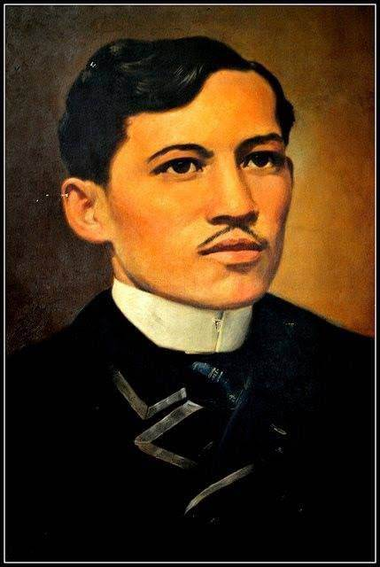
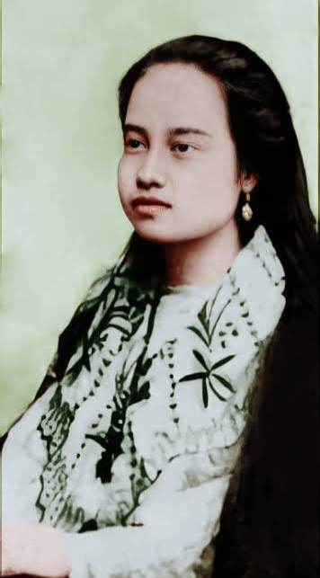
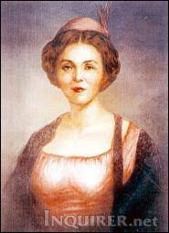
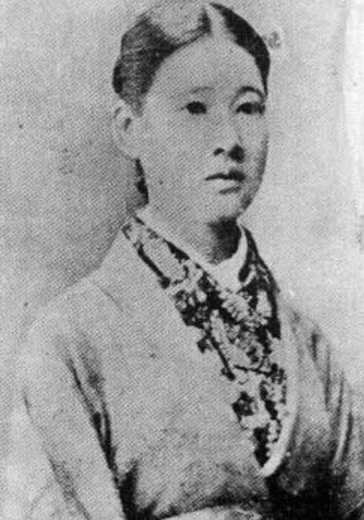
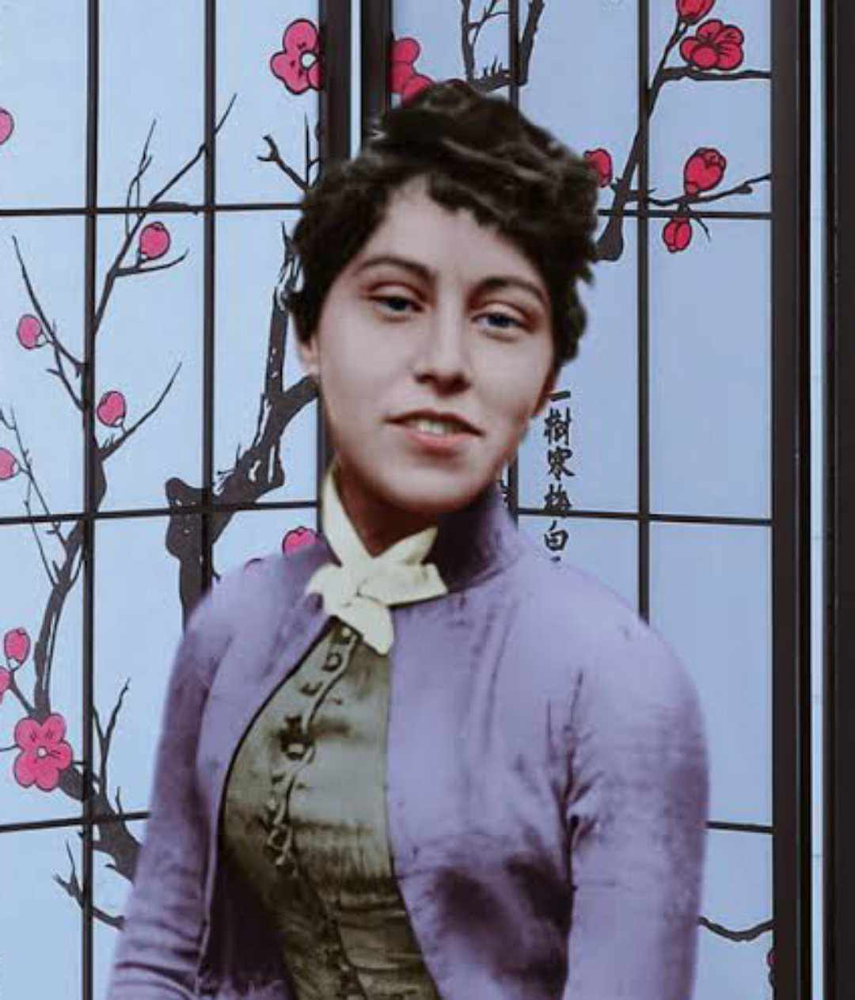
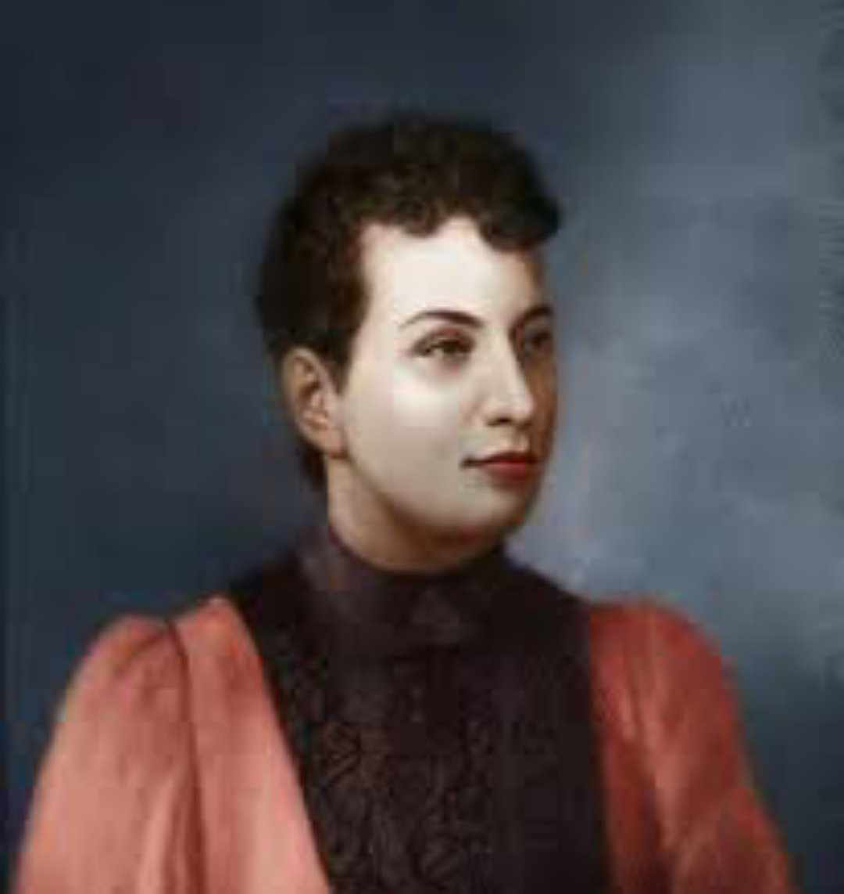
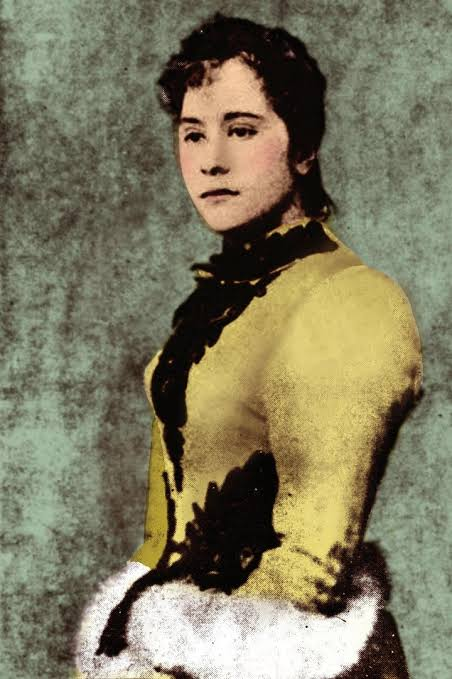
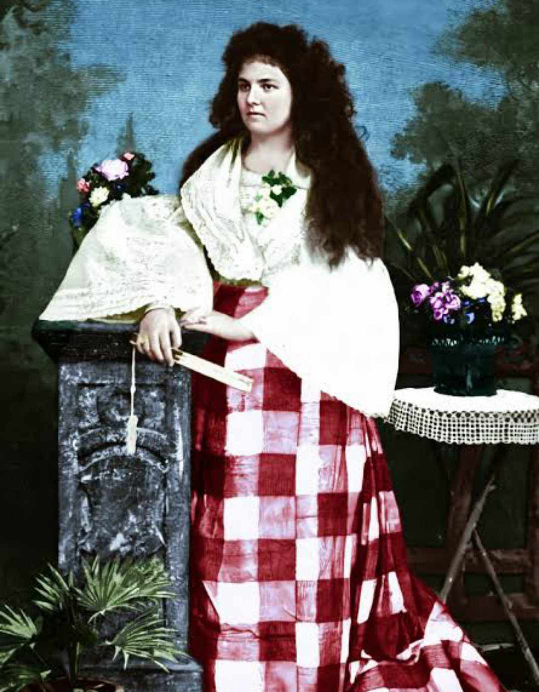

Jose Rizal (1861)

Segunda Katigbak (1877)
Leonor Valenzuela (1878)
Leonor Rivera (1880-1891)

Consuelo Ortiga y Pérez (1882)

O-Sei-San (1888)

Gertrude Beckett (1888)

Suzanne Jacoby (1890)

Nellie Boustead (1890)

Josephine Bracken (1895)